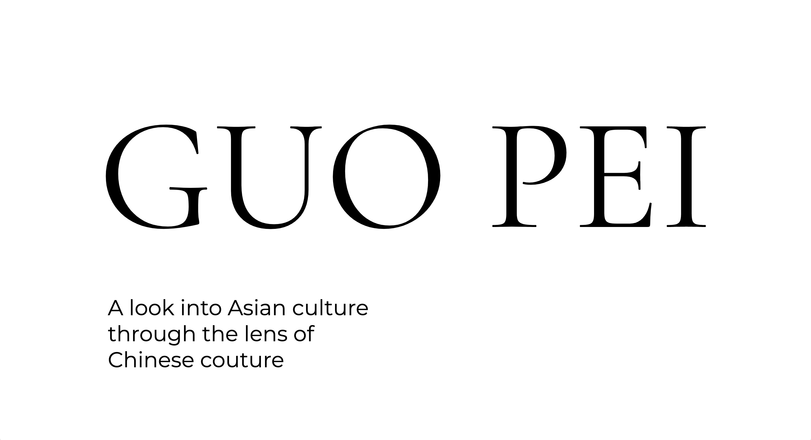

For my final project, I will be improving my Every Picture project through updated design and interaction design.
Below are two websites with similar content or interaction design that inspired by Every Picture project.
This website educates readers about the goddess, Venus, using diverse interactions and layouts. Though the interactions used here are way out of my abilities technically, it inspired me nontheless because it showed me how I could use interactions and layouts to affect how information is delivered. The website scrolls horizontally and somtimes horizontally as the user scrolls vertically and slowly reveals different sections. It uses a variety of font styles, weights, and layouts to engage the reader and display different types of information.
One thing I dislike about the site is that it refreshes very often whenever I do anything which really affects my viewing experience because I would have to scroll all the way back to where I left off.
This is an article on the Legion of Honor's website about Guo Pei's exhibit and the pieces displayed. It uses a lot of high quality images to show the different pieces.
The con about this site is that it uses no interaction design so the viewing experience is a bit bland. The images uses are also massive and take up the whole page.
Currently, my site is pretty bland aside form my photos as it is in black and white. I might want to experiment with adding more color. I also want to change the layout of how I display my information.
I plan to add on to my current design and improve the interaction design of my site. I want to add a slideshow to my blue and white porcelain section. I also want to do more about the "other notable collections" section such as adding an overlay for each collection. I also want to experiment with an overlay on hover.
I want users to feel like they were visiting the exhibit and seeing all the pieces and their details. I also want them to learn something new about Chinese culture.